Datacenter
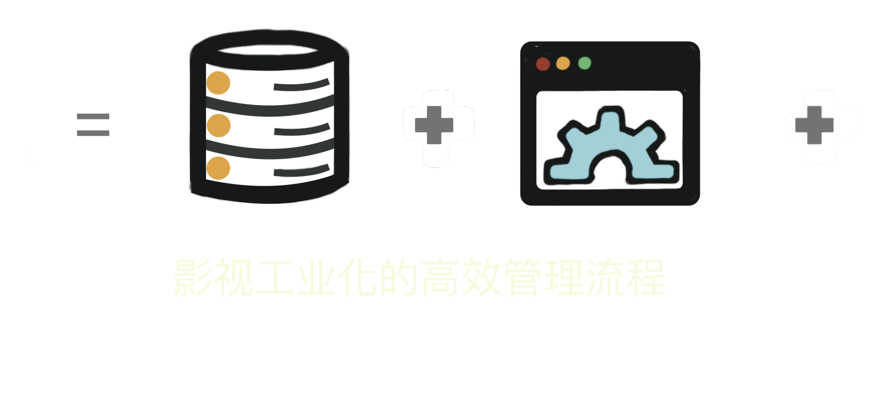
- 降本增效: 平均管理成本降低45%,效率提升1.8倍
- 数据安全: https及细致的权限划分,确保数据安全,离线工具集保障本地资料安全
- 技术支持: 具有项目经验的技术人员24H的微信群能高效响应系统问题
- 易学易用: 根据多年经验设计的流程,简单易学,更可以快速布局
- 项目归档: 留存完整项目索引,方便查找交付的各种版本
电影视效制作大片提升部门效率的百分比
古装仙侠剧集提升部门效率的百分比
| 适合
剧组 项目管理使用,制片,特效剪辑,特效I/O
后期制作公司 镜头QC进度与反馈管理
特效公司 镜头管理
| 合作方式
项目签约,微信群组24H专人服务
可以专案架设 也可以落地部署
| 参与项目
调光调色
网络电影短片剧集调色
使用设备: SGO Mistika, Davinci Resolve,尊正监视器
| 调色项目
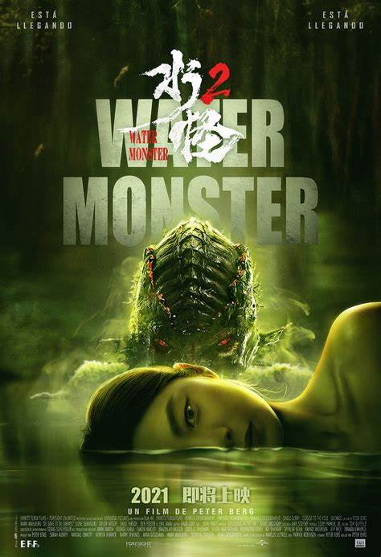
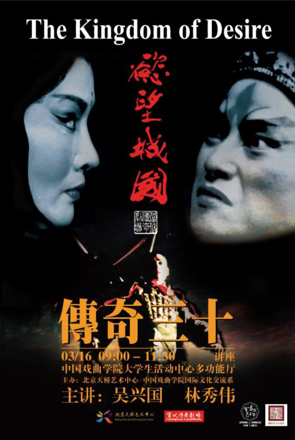
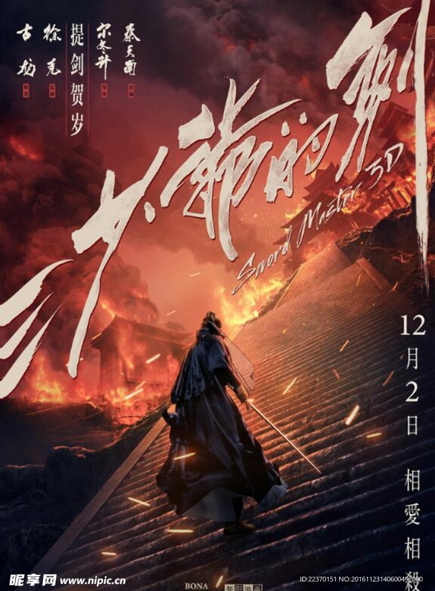
归档系统
量身定制专业的影像归档流程及素材调用系统
包含:系统采购、建置、部署、开发
| 适合
影视公司素材归档系统搭建部署
方便展示,版权买卖,查找拍摄素材,输出打包各种版本
| 效果
展示项目成果,版权买卖,查找拍摄素材,输出打包各种版本
| 合作方式
项目签约,维护年约
其它开发
与影像制作有关的工具开发
Ex.批次导入,挑条拷贝,批次套片,自动上编号,AI识别,云端存储,云端审核镜头等
| 工具展示
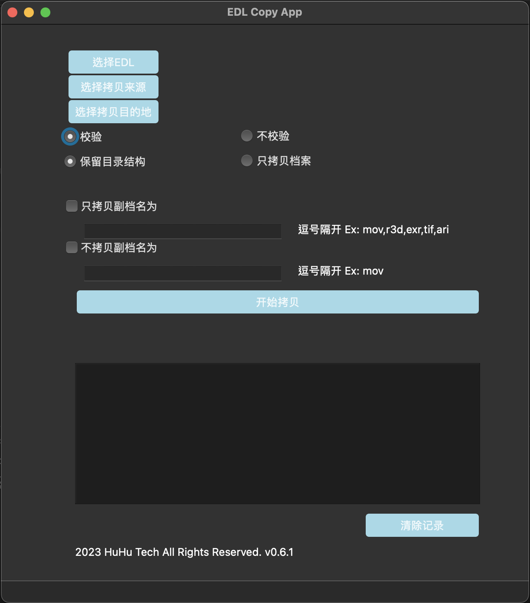
挑条拷贝
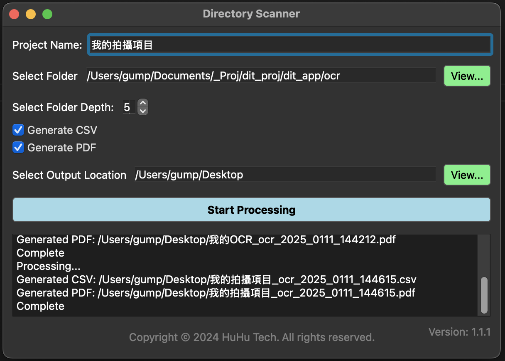
扫盘报告
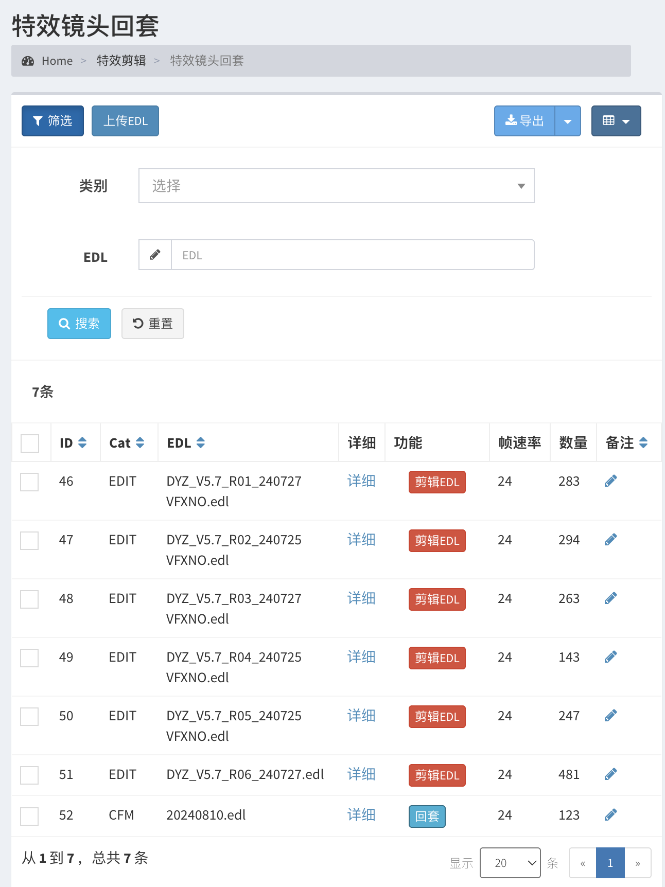
批次套片
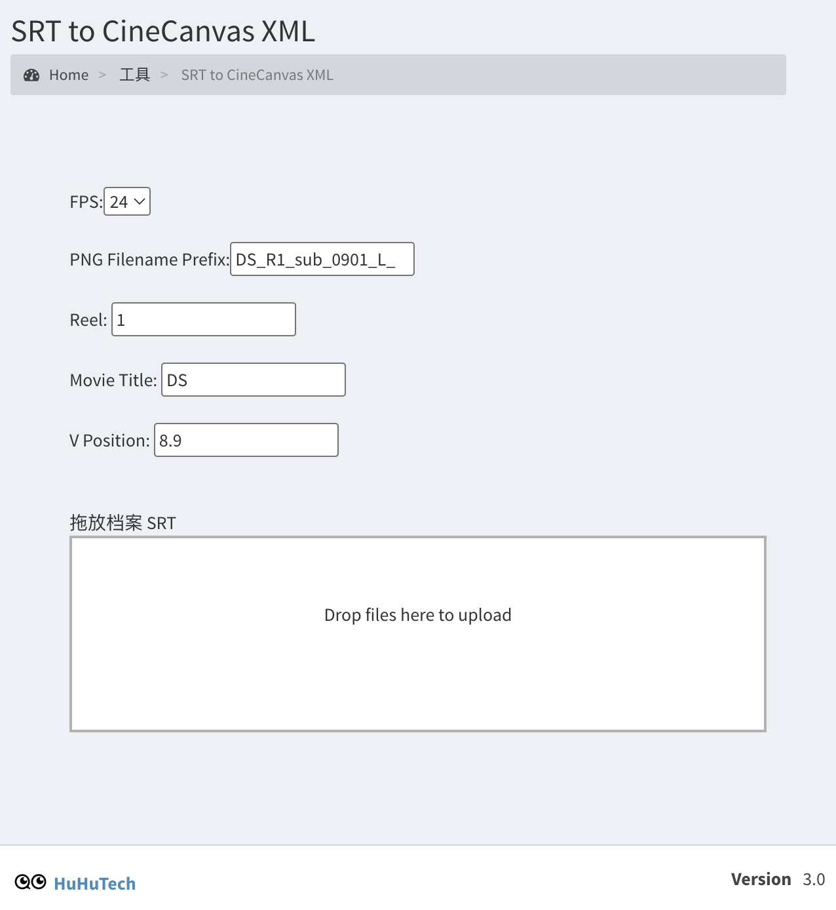
立体字幕
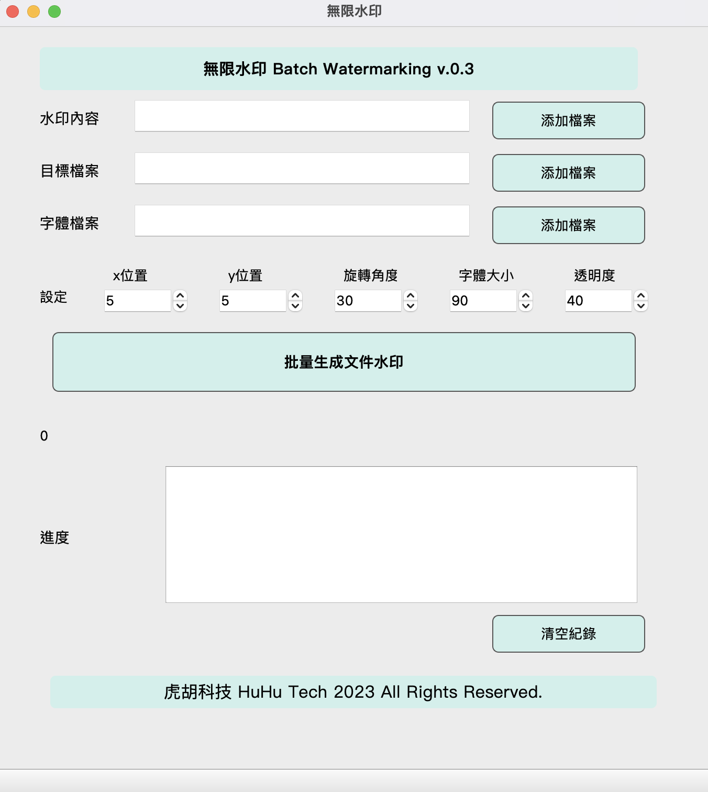
批次压水印
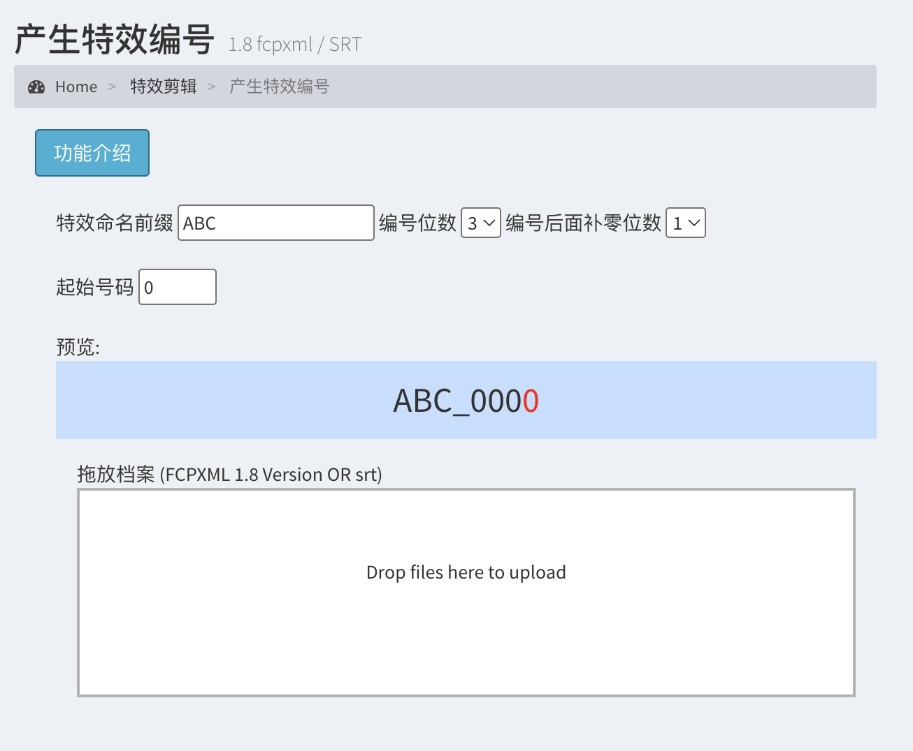
自动上编号
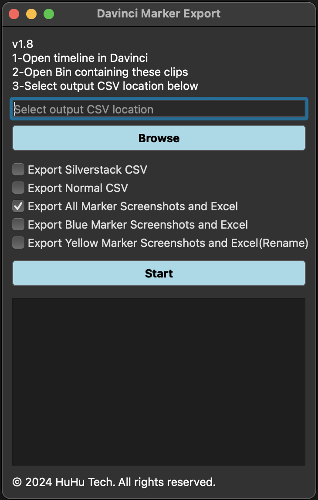
DavinciResolveMarker导出
Ex.批次导入,挑条拷贝,批次套片,自动上编号,AI识别,云端存储,云端审核镜头等
| 工具展示

挑条拷贝
扫盘报告
批次套片
立体字幕
批次压水印
自动上编号
DavinciResolveMarker导出关于我们
从2010来到北京,加入徐克导演的制作团队,参与了多部电影的制作,从项目筹备,现场拍摄,到后期制作都参与其中. 制作龙门飞甲后期时发现特效版本控制是一个可以流程化,且适合在线上查询的系统,于是开发了datacenter, 以及一些桌面小工具来帮助立体素材套片以及立体字幕制作. 2012年成立映日象限影像技术有限公司,专注于后期立体制作,调光调色,熟悉了色彩科学,以及各种档案和制作标准. 把这些从事影像技术的经验,结合十几年来的软件开发技术,陆续开发了许多针对后期制作的流程和工具. 2018年,开始接触沉浸式体验,发觉把影像技术应用在线下体验上,让玩家在丰富的声光效果中真实互动, 更能体会到影像技术的魔力.于是成立虎胡科技有限公司,专注于影像技术在沉浸式体验上的应用.同时也不忘初心, 将电影后期制作的经验,加上互联网科技与AI技术,带给行业解决方案,确实解决技术问题,提升制作效率.